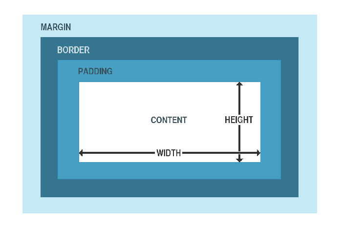

CSS
Cascading Style Sheet.
CSS Kutu Modeli
Tüm CSS elemanları birer kutu olarak düşünülebilir. CSS'te tasarım ve düzenden bahsediliyorsa, "Kutu Modeli" terimi kullanılır. CSS Kutu Modeli esasında HTML bileşenlerinin etrafını saran ve margin (kenar mesafesi), border (sınır), padding (boşluk) ve content (içerikten) oluşan elemanlardan ibarettir.
CSS Kutu Modeli, bize elemanların etrafına bir sınır ekleme (border) ya da elemanlar arasında bir boşluk (padding) tanımlama olanağı sağlar.
Aşağıdaki şema, CSS Kutu Modeli elemanlarını daha iyi kavramanıza yardımcı olacaktır:

Bu şemadaki elemanların açıklamalarına gelecek olursak;
- Content: Resim ve metnin görüneceği kutunun içeriğidir.
- Padding: İçerik etrafında bir alanı temizleyerek boşluk oluşturur. Padding daima saydamdır.
- Border: Boşluk ve içeriğin etrafında yer alan sınır çizgisidir.
- Margin: Sınırın dışında kalan alandır. Daima saydamdır.